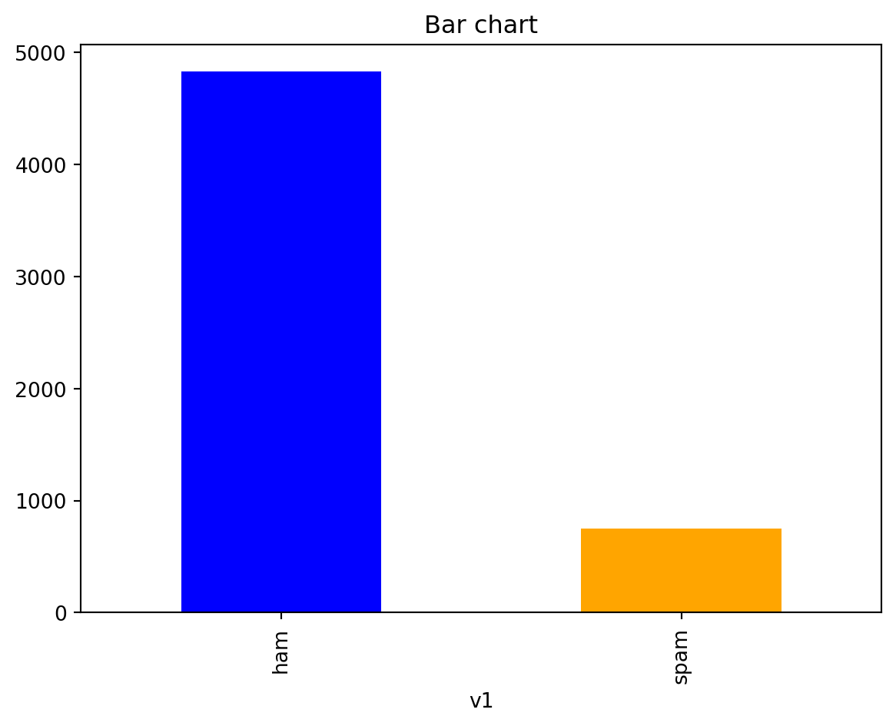
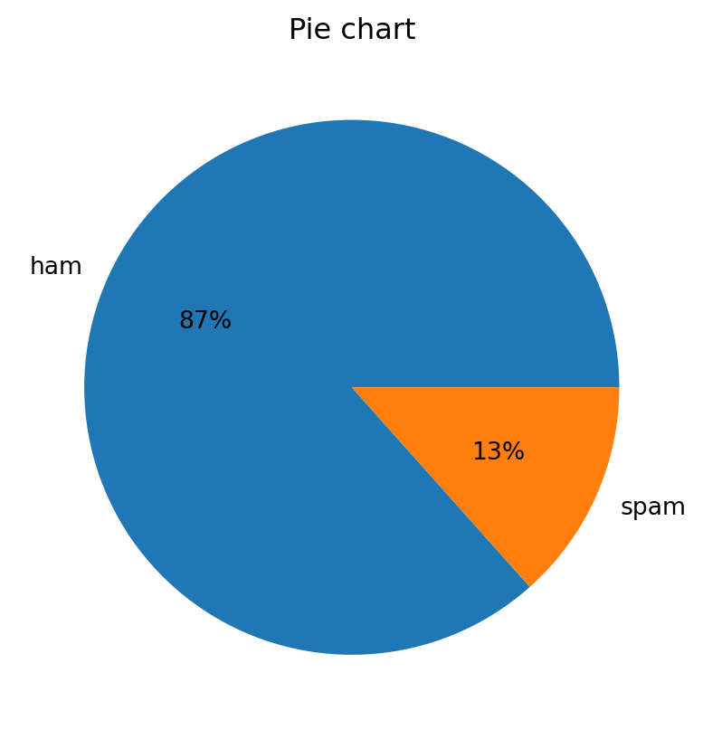
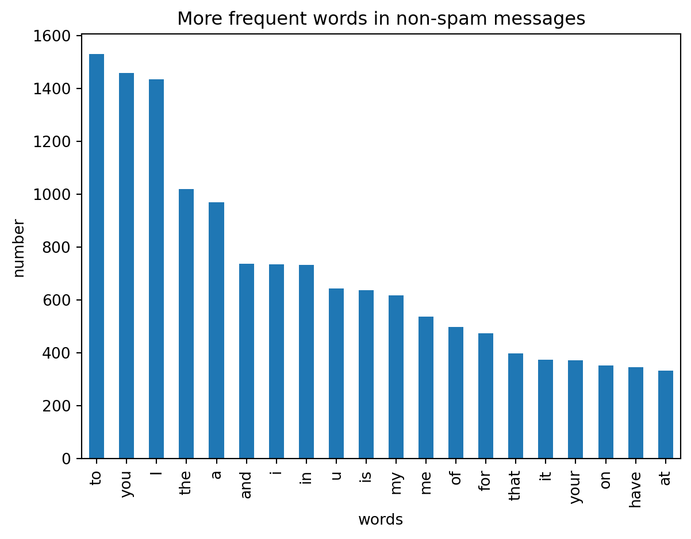
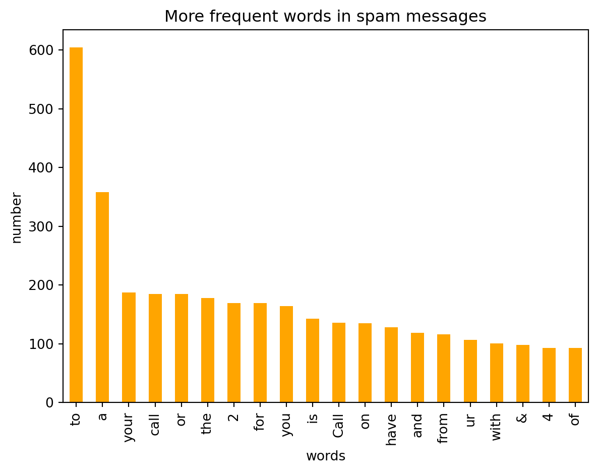

{kind=link}
{kind=link}
{kind=link}
{kind=link}
import numpy as np
import pandas as pd
import matplotlib.pyplot as plt
from collections import Counter
from sklearn import feature_extraction, model_selection, naive_bayes, metrics, svm
from IPython.display import Image
import warnings
warnings.filterwarnings("ignore")
%matplotlib inline 
Definition and Overview of Classification
Classification in machine learning and statistics is a supervised learning approach where the objective is to categorize data into predefined classes. In simpler terms, it involves deciding which category or class a new observation belongs to, based on a training set of data containing observations whose category membership is known.
Key Components
Classes or Categories: These are the distinct groups or categories that data points are classified into. For instance, in a binary classification, there are two classes, while in multi-class classification, there could be three or more.
Features: These are individual independent variables that act as the input for the process. Each feature contributes to determining the output class.
Labels: In the training dataset, each data point is tagged with the correct label, which the algorithm then learns to predict.
How Classification Works
Training Phase: The algorithm is trained on a labeled dataset, where it learns the relationship between features and the corresponding class labels.
Model Building: The algorithm creates a model that maps inputs (features) to desired outputs (labels). This model represents the learned patterns from the data.
Testing and Prediction: The trained model is then used to predict the class labels of new, unseen data. The performance of the model is typically evaluated using metrics like accuracy, precision, recall, and F1 score.
Types of Classification
Binary Classification: Involves two classes. Common examples include spam detection (spam or not spam) and medical diagnoses (sick or healthy).
Multiclass Classification: Involves more than two classes, but each instance is assigned to only one class. An example would be classifying types of fruits.
Multilabel Classification: Each instance may be assigned to multiple classes. For example, a news article might be categorized into multiple genres like sports, politics, and finance.
Applications
Medical Diagnosis: Identifying diseases based on symptoms and test results.
Spam Filtering: Categorizing emails as spam or non-spam.
Sentiment Analysis: Classifying the sentiment of text data (positive, negative, neutral).
Image Recognition: Categorizing images into various classes like animals, objects, etc. Credit Scoring: Assessing creditworthiness as high-risk or low-risk.
Once trained, the algorithm can classify new, unseen data by assessing its similarity to the patterns it has learned. It predicts the likelihood of the new data point falling into one of the predefined categories. This process is akin to your email provider recognizing whether an incoming email is spam or not based on past experiences.
Classification Algorithms
Logistic Regression:
Overview: Logistic Regression is used for binary classification problems. It models the probability that each input belongs to a particular category. Mechanism: This algorithm uses a logistic function to squeeze the output of a linear equation between 0 and 1. The result is the probability that the given input point belongs to a certain class.
Pros: Simple and efficient. Provides a probability score for observations. Low variance, avoiding overfitting.
Cons: Struggles with non-linear data. Assumes no missing values and that predictors are independent.
Applications: Commonly used in fields like credit scoring, medical fields for disease diagnosis, and predictive analytics.
Naive Bayes:
Overview: Based on Bayes’ Theorem, it assumes independence among predictors. Mechanism: It calculates the probability of each class and the conditional probability of each class given each input value. These probabilities are then used to classify the data.
Pros: Fast and efficient. Performs well with a smaller amount of data. Handles multi-class prediction problems well.
Cons: The assumption of independent features is often unrealistic. Can be outperformed by more complex models.
Applications: Widely used in spam filtering, text analysis, and sentiment analysis.
K-Nearest Neighbors (KNN):
Overview: A non-parametric method used for classification and regression. Mechanism: Classifies data based on how its neighbors are classified. It finds the K nearest points to the new data point and classifies it based on the majority class of these points.

Pros: Simple and intuitive. No need to build a model or tune parameters. Flexible to feature/distance choices.
Cons: Slows significantly as data size increases. Sensitive to irrelevant or redundant features.
Applications: Used in recommendation systems, image recognition, and more.
Support Vector Machine (SVM):
Overview: Effective in high dimensional spaces and best suited for binary classification. Mechanism: Constructs a hyperplane in a multidimensional space to separate different classes. SVM finds the best margin (distance between the line and the support vectors) to separate the classes.

Pros: Effective in high-dimensional spaces. Uses a subset of training points (support vectors), so it’s memory efficient.
Cons: Not suitable for larger datasets. Does not perform well with noisy data.
Applications: Used in face detection, text and hypertext categorization, classification of images.
Decision Tree:
Overview: A tree-structure algorithm, where each node represents a feature, each branch a decision rule, and each leaf a class. Mechanism: Splits the data into subsets based on feature values. This process is repeated recursively, resulting in a tree with decision nodes and leaf nodes.
Pros: Easy to interpret and explain. Requires little data preparation. Can handle both numerical and categorical data.
Cons: Prone to overfitting, especially with complex trees. Small changes in data can lead to a different tree.
Applications: Used in customer segmentation, fraud detection, and risk assessment.
Example: Spam Classification with Naive Bayes and Support Vector Machine
Exploring the Dataset
data = pd.read_csv('R:/MLBlog/posts/classification/spam.csv', encoding='latin-1')
data.head(n=10)| v1 | v2 | Unnamed: 2 | Unnamed: 3 | Unnamed: 4 | |
|---|---|---|---|---|---|
| 0 | ham | Go until jurong point, crazy.. Available only ... | NaN | NaN | NaN |
| 1 | ham | Ok lar... Joking wif u oni... | NaN | NaN | NaN |
| 2 | spam | Free entry in 2 a wkly comp to win FA Cup fina... | NaN | NaN | NaN |
| 3 | ham | U dun say so early hor... U c already then say... | NaN | NaN | NaN |
| 4 | ham | Nah I don't think he goes to usf, he lives aro... | NaN | NaN | NaN |
| 5 | spam | FreeMsg Hey there darling it's been 3 week's n... | NaN | NaN | NaN |
| 6 | ham | Even my brother is not like to speak with me. ... | NaN | NaN | NaN |
| 7 | ham | As per your request 'Melle Melle (Oru Minnamin... | NaN | NaN | NaN |
| 8 | spam | WINNER!! As a valued network customer you have... | NaN | NaN | NaN |
| 9 | spam | Had your mobile 11 months or more? U R entitle... | NaN | NaN | NaN |
Distribution spam/non-spam plots
count_Class=pd.value_counts(data["v1"], sort= True)
count_Class.plot(kind= 'bar', color= ["blue", "orange"])
plt.title('Bar chart')
plt.show()
count_Class.plot(kind = 'pie', autopct='%1.0f%%')
plt.title('Pie chart')
plt.ylabel('')
plt.show()
Text Analytics
We want to find the frequencies of words in the spam and non-spam messages. The words of the messages will be model features.
We use the function Counter.
count1 = Counter(" ".join(data[data['v1']=='ham']["v2"]).split()).most_common(20)
df1 = pd.DataFrame.from_dict(count1)
df1 = df1.rename(columns={0: "words in non-spam", 1 : "count"})
count2 = Counter(" ".join(data[data['v1']=='spam']["v2"]).split()).most_common(20)
df2 = pd.DataFrame.from_dict(count2)
df2 = df2.rename(columns={0: "words in spam", 1 : "count_"})df1.plot.bar(legend = False)
y_pos = np.arange(len(df1["words in non-spam"]))
plt.xticks(y_pos, df1["words in non-spam"])
plt.title('More frequent words in non-spam messages')
plt.xlabel('words')
plt.ylabel('number')
plt.show()
df2.plot.bar(legend = False, color = 'orange')
y_pos = np.arange(len(df2["words in spam"]))
plt.xticks(y_pos, df2["words in spam"])
plt.title('More frequent words in spam messages')
plt.xlabel('words')
plt.ylabel('number')
plt.show()
We can see that the majority of frequent words in both classes are stop words such as ‘to’, ‘a’, ‘or’ and so on.
With stop words we refer to the most common words in a lenguage, there is no simgle, universal list of stop words.
Feature engineering
Text preprocessing, tokenizing and filtering of stopwords are included in a high level component that is able to build a dictionary of features and transform documents to feature vectors.
We remove the stop words in order to improve the analytics
f = feature_extraction.text.CountVectorizer(stop_words = 'english')
X = f.fit_transform(data["v2"])
np.shape(X)(5572, 8404)We have created more than 8400 new features. The new feature j in the row i is equal to 1 if the word wj appears in the text example i . It is zero if not.
Predictive Analysis
My goal is to predict if a new sms is spam or non-spam. I assume that is much worse misclassify non-spam than misclassify an spam. (I don’t want to have false positives)
The reason is because I normally don’t check the spam messages.
The two possible situations are:
New spam sms in my inbox. (False negative). OUTCOME: I delete it.
New non-spam sms in my spam folder (False positive). OUTCOME: I probably don’t read it.
I prefer the first option!!!
First we transform the variable spam/non-spam into binary variable, then we split our data set in training set and test set.
data["v1"]=data["v1"].map({'spam':1,'ham':0})
X_train, X_test, y_train, y_test = model_selection.train_test_split(X, data['v1'], test_size=0.33, random_state=42)
print([np.shape(X_train), np.shape(X_test)])[(3733, 8404), (1839, 8404)]Multinomial naive bayes classifier
We train different bayes models changing the regularization parameter α.
We evaluate the accuracy, recall and precision of the model with the test set.
list_alpha = np.arange(1/100000, 20, 0.11)
score_train = np.zeros(len(list_alpha))
score_test = np.zeros(len(list_alpha))
recall_test = np.zeros(len(list_alpha))
precision_test= np.zeros(len(list_alpha))
count = 0
for alpha in list_alpha:
bayes = naive_bayes.MultinomialNB(alpha=alpha)
bayes.fit(X_train, y_train)
score_train[count] = bayes.score(X_train, y_train)
score_test[count]= bayes.score(X_test, y_test)
recall_test[count] = metrics.recall_score(y_test, bayes.predict(X_test))
precision_test[count] = metrics.precision_score(y_test, bayes.predict(X_test))
count = count + 1 Let’s see the first 10 learning models and their metrics!
matrix = np.matrix(np.c_[list_alpha, score_train, score_test, recall_test, precision_test])
models = pd.DataFrame(data = matrix, columns =
['alpha', 'Train Accuracy', 'Test Accuracy', 'Test Recall', 'Test Precision'])
models.head(n=10)| alpha | Train Accuracy | Test Accuracy | Test Recall | Test Precision | |
|---|---|---|---|---|---|
| 0 | 0.00001 | 0.998661 | 0.974443 | 0.920635 | 0.895753 |
| 1 | 0.11001 | 0.997857 | 0.976074 | 0.936508 | 0.893939 |
| 2 | 0.22001 | 0.997857 | 0.977162 | 0.936508 | 0.900763 |
| 3 | 0.33001 | 0.997589 | 0.977162 | 0.936508 | 0.900763 |
| 4 | 0.44001 | 0.997053 | 0.977162 | 0.936508 | 0.900763 |
| 5 | 0.55001 | 0.996250 | 0.976618 | 0.936508 | 0.897338 |
| 6 | 0.66001 | 0.996518 | 0.976074 | 0.932540 | 0.896947 |
| 7 | 0.77001 | 0.996518 | 0.976074 | 0.924603 | 0.903101 |
| 8 | 0.88001 | 0.996250 | 0.976074 | 0.924603 | 0.903101 |
| 9 | 0.99001 | 0.995982 | 0.976074 | 0.920635 | 0.906250 |
I select the model with the most test precision
best_index = models['Test Precision'].idxmax()
models.iloc[best_index, :]alpha 15.730010
Train Accuracy 0.979641
Test Accuracy 0.969549
Test Recall 0.777778
Test Precision 1.000000
Name: 143, dtype: float64My best model does not produce any false positive, which is our goal.
Let’s see if there is more than one model with 100% precision !
models[models['Test Precision']==1].head(n=5)| alpha | Train Accuracy | Test Accuracy | Test Recall | Test Precision | |
|---|---|---|---|---|---|
| 143 | 15.73001 | 0.979641 | 0.969549 | 0.777778 | 1.0 |
| 144 | 15.84001 | 0.979641 | 0.969549 | 0.777778 | 1.0 |
| 145 | 15.95001 | 0.979641 | 0.969549 | 0.777778 | 1.0 |
| 146 | 16.06001 | 0.979373 | 0.969549 | 0.777778 | 1.0 |
| 147 | 16.17001 | 0.979373 | 0.969549 | 0.777778 | 1.0 |
Between these models with the highest possible precision, we are going to select which has more test accuracy.
best_index = models[models['Test Precision']==1]['Test Accuracy'].idxmax()
bayes = naive_bayes.MultinomialNB(alpha=list_alpha[best_index])
bayes.fit(X_train, y_train)
models.iloc[best_index, :]alpha 15.730010
Train Accuracy 0.979641
Test Accuracy 0.969549
Test Recall 0.777778
Test Precision 1.000000
Name: 143, dtype: float64Confusion matrix with naive bayes classifier
m_confusion_test = metrics.confusion_matrix(y_test, bayes.predict(X_test))
pd.DataFrame(data = m_confusion_test, columns = ['Predicted 0', 'Predicted 1'],
index = ['Actual 0', 'Actual 1'])| Predicted 0 | Predicted 1 | |
|---|---|---|
| Actual 0 | 1587 | 0 |
| Actual 1 | 56 | 196 |
We misclassify 56 spam messages as non-spam emails whereas we don’t misclassify any non-spam message.
Support Vector Machine
We are going to apply the same reasoning applying the support vector machine model with the gaussian kernel.
We train different models changing the regularization parameter C.
We evaluate the accuracy, recall and precision of the model with the test set.
list_C = np.arange(500, 2000, 100) #100000
score_train = np.zeros(len(list_C))
score_test = np.zeros(len(list_C))
recall_test = np.zeros(len(list_C))
precision_test= np.zeros(len(list_C))
count = 0
for C in list_C:
svc = svm.SVC(C=C)
svc.fit(X_train, y_train)
score_train[count] = svc.score(X_train, y_train)
score_test[count]= svc.score(X_test, y_test)
recall_test[count] = metrics.recall_score(y_test, svc.predict(X_test))
precision_test[count] = metrics.precision_score(y_test, svc.predict(X_test))
count = count + 1 Let’s see the first 10 learning models and their metrics!
matrix = np.matrix(np.c_[list_C, score_train, score_test, recall_test, precision_test])
models = pd.DataFrame(data = matrix, columns =
['C', 'Train Accuracy', 'Test Accuracy', 'Test Recall', 'Test Precision'])
models.head(n=10)| C | Train Accuracy | Test Accuracy | Test Recall | Test Precision | |
|---|---|---|---|---|---|
| 0 | 500.0 | 1.0 | 0.979337 | 0.853175 | 0.99537 |
| 1 | 600.0 | 1.0 | 0.979337 | 0.853175 | 0.99537 |
| 2 | 700.0 | 1.0 | 0.979337 | 0.853175 | 0.99537 |
| 3 | 800.0 | 1.0 | 0.979337 | 0.853175 | 0.99537 |
| 4 | 900.0 | 1.0 | 0.979337 | 0.853175 | 0.99537 |
| 5 | 1000.0 | 1.0 | 0.979337 | 0.853175 | 0.99537 |
| 6 | 1100.0 | 1.0 | 0.979337 | 0.853175 | 0.99537 |
| 7 | 1200.0 | 1.0 | 0.979337 | 0.853175 | 0.99537 |
| 8 | 1300.0 | 1.0 | 0.979337 | 0.853175 | 0.99537 |
| 9 | 1400.0 | 1.0 | 0.979337 | 0.853175 | 0.99537 |
I select the model with the most test precision
best_index = models['Test Precision'].idxmax()
models.iloc[best_index, :]C 500.000000
Train Accuracy 1.000000
Test Accuracy 0.979337
Test Recall 0.853175
Test Precision 0.995370
Name: 0, dtype: float64My best model does not produce any false positive, which is our goal.
Confusion matrix with support vector machine classifier.
m_confusion_test = metrics.confusion_matrix(y_test, svc.predict(X_test))
pd.DataFrame(data = m_confusion_test, columns = ['Predicted 0', 'Predicted 1'],
index = ['Actual 0', 'Actual 1'])| Predicted 0 | Predicted 1 | |
|---|---|---|
| Actual 0 | 1586 | 1 |
| Actual 1 | 37 | 215 |
We misclassify 37 spam as non-spam messages whereas we don’t misclassify any non-spam message.
Conclusion
The best model I have found is support vector machine with 98.3% accuracy.
It classifies every non-spam message correctly (Model precision)
It classifies the 87.7% of spam messages correctly (Model recall)